81 منشوراً
أرشيف 2023
كانون الأول 2023
- أخبار علمية · مرصد الشمس الفلكي الأثري السعودية
- أخبار علمية · إنجازات إدارة الفضاء الوطنية الصينية لعام 2023
-
 محاضرات وفعاليات · عقد دورة فلكية على منصة زووم بعنوان: المس السماء مع ستيلاريوم Touch the Sky with Stellarium
محاضرات وفعاليات · عقد دورة فلكية على منصة زووم بعنوان: المس السماء مع ستيلاريوم Touch the Sky with Stellarium
- أخبار علمية · عقدت محاضرة ”فيزياء نظامنا الشمسي“ مساء يوم السبت الموافق 16 كانون الأول – ديسمبر 2023
-
 محاضرات وفعاليات · دعوة لحضور محاضرة بعنوان الجيوديسيا الفضائية
محاضرات وفعاليات · دعوة لحضور محاضرة بعنوان الجيوديسيا الفضائية
-
 محاضرات وفعاليات · دعوة لحضور محاضرة: اكتشاف فيزياء نظامنا الشمسي
محاضرات وفعاليات · دعوة لحضور محاضرة: اكتشاف فيزياء نظامنا الشمسي
- أخبار علمية · منارة حائل الفضائية
-
 محاضرات وفعاليات · دعوة لحضور محاضرة: علم الأحياء الدقيقة في الفضاء: ما مدى أهميته!
محاضرات وفعاليات · دعوة لحضور محاضرة: علم الأحياء الدقيقة في الفضاء: ما مدى أهميته!
-
 محاضرات وفعاليات · محاضرة لطلاب الصف الثاني عن “المجموعة الشمسية” قدمتها الأستاذة دلال اللالا
محاضرات وفعاليات · محاضرة لطلاب الصف الثاني عن “المجموعة الشمسية” قدمتها الأستاذة دلال اللالا
-
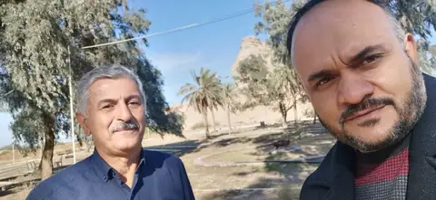
أخبار علمية · سفرة علمية
تشرين الثاني 2023
تشرين الأول 2023
أيلول 2023

آب 2023
- محاضرات وفعاليات · محاضرة ٢٧ آب ٢٠٢٣ - د. سعيد صباغ (فيزياء الشفق والفجر الكاذب والفجر الصادق وألوان السماء في أوقات الصلاة)
-
 محاضرات وفعاليات · محاضرة تكنولوجيا الأقمار الصناعية بالتعاون مع قصر العلوم بالمنستير
محاضرات وفعاليات · محاضرة تكنولوجيا الأقمار الصناعية بالتعاون مع قصر العلوم بالمنستير
-
 محاضرات وفعاليات · دعوة لحضور محاضرة علمية بعنوان: فيزياء الشفق والفجر الكاذب والفجر الصادق وألوان السماء في أوقات الصلاة: محاكاة فلكية
محاضرات وفعاليات · دعوة لحضور محاضرة علمية بعنوان: فيزياء الشفق والفجر الكاذب والفجر الصادق وألوان السماء في أوقات الصلاة: محاكاة فلكية
-
 محاضرات وفعاليات · ندوة آثار العجيري في علم الفلك العربي
محاضرات وفعاليات · ندوة آثار العجيري في علم الفلك العربي
-
 محاضرات وفعاليات · ندوة اليوم العالمي للمرأة والفتاة العربية في العلوم والفضاء
محاضرات وفعاليات · ندوة اليوم العالمي للمرأة والفتاة العربية في العلوم والفضاء
-
 محاضرات وفعاليات · ندوة هلال رمضان بين الرؤية الشرعية والحسابات الفلكية
محاضرات وفعاليات · ندوة هلال رمضان بين الرؤية الشرعية والحسابات الفلكية
-
 محاضرات وفعاليات · دورة الفلكي الصغير – من أرض الرافدين إلى أقصى السماء
محاضرات وفعاليات · دورة الفلكي الصغير – من أرض الرافدين إلى أقصى السماء
-
 محاضرات وفعاليات · دورة المهارات الفلكية (3)
محاضرات وفعاليات · دورة المهارات الفلكية (3)
-
 محاضرات وفعاليات · ورشة المعلم الفلكي
محاضرات وفعاليات · ورشة المعلم الفلكي
-
 محاضرات وفعاليات · دورة المهارات الفلكية (4)
محاضرات وفعاليات · دورة المهارات الفلكية (4)
- أخبار الاتحاد · التصوير الفلكي من الهواية إلى الاحتراف
-
 محاضرات وفعاليات · محاضرة العلم والدين – جدلية العلاقة وتاريخها
محاضرات وفعاليات · محاضرة العلم والدين – جدلية العلاقة وتاريخها
تموز 2023
حزيران 2023

أيار 2023
-
 محاضرات وفعاليات · دعوة لحضور محاضرة بعنوان – ماذا تعلمنا الظواهر الفلكية
محاضرات وفعاليات · دعوة لحضور محاضرة بعنوان – ماذا تعلمنا الظواهر الفلكية
-
 محاضرات وفعاليات · دعوة لحضور محاضرة: ماذا تعلمنا الظواهر الفلكية؟!
محاضرات وفعاليات · دعوة لحضور محاضرة: ماذا تعلمنا الظواهر الفلكية؟!
-
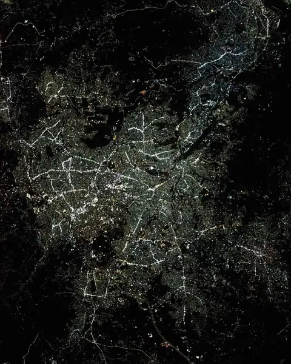
أخبار علمية · صورة للعاصمة عمان بمناسبة ذكرى استقلال الأردن -
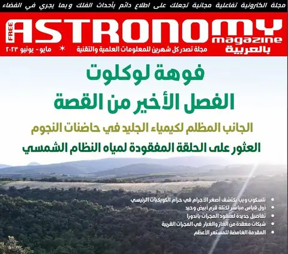
أخبار علمية · مجلة (Astronomy Magazine) بالعربية – عدد مايو/يونيو 2023 -
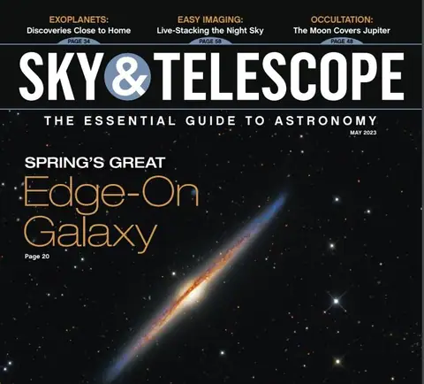
أخبار علمية · عدد مجلة (Sky & Telescope) - أخبار علمية · مشروع قمر دبي
نيسان 2023
-
 محاضرات وفعاليات · دعوة للمشاركة في مبادرة ومسابقة: علم الفلك بالمقاييس الهائلة – الناس، الأماكن، الاكتشافات
محاضرات وفعاليات · دعوة للمشاركة في مبادرة ومسابقة: علم الفلك بالمقاييس الهائلة – الناس، الأماكن، الاكتشافات
-
 محاضرات وفعاليات · دعوة لحضور المهرجان الوطني ١٨ في علم الفلك الجماهيري
محاضرات وفعاليات · دعوة لحضور المهرجان الوطني ١٨ في علم الفلك الجماهيري
- أخبار علمية · مصير الأرض في المستقبل القريب ٣
- أخبار علمية · مصير الأرض في المستقبل البعيد جدا
- أخبار علمية · مصير الأرض في المستقبل القريب (٢)
- أخبار علمية · مصير الأرض في المستقبل القريب (١)
- أخبار علمية · بعض تكنولوجيا الأرض (٢)
- أخبار علمية · سلماً في السماء
-
 محاضرات وفعاليات · دعوة لحضور محاضرة: اكتشاف زخات شهب جديدة عبر شبكة الإمارات لرصد الشهب والنيازك
محاضرات وفعاليات · دعوة لحضور محاضرة: اكتشاف زخات شهب جديدة عبر شبكة الإمارات لرصد الشهب والنيازك
- أخبار علمية · المدلول القرآني
آذار 2023
- أخبار علمية · مجلة الكون العدد السابع
- أخبار علمية · آيات للموقنين
- أخبار علمية · لا مثيل لكوكبنا
- أخبار علمية · البر والبحر
- أخبار الاتحاد · مستقر ومتاع
- أخبار الاتحاد · حاضنة الحياة
- أخبار الاتحاد · مجلة الصائم – جنة الدنيا
-
 محاضرات وفعاليات · دعوة لحضور المحاضرة الأسبوعية: علم الفلك للمبتدئين
محاضرات وفعاليات · دعوة لحضور المحاضرة الأسبوعية: علم الفلك للمبتدئين
-
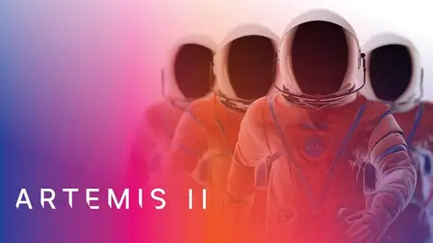
أخبار علمية · من هم روّاد فضاء رحلة (أرتيميس 2) إلى القمر؟! -
 محاضرات وفعاليات · اليوم العالمي للمرأة والفتاة العربية في العلوم والفضاء
محاضرات وفعاليات · اليوم العالمي للمرأة والفتاة العربية في العلوم والفضاء
-
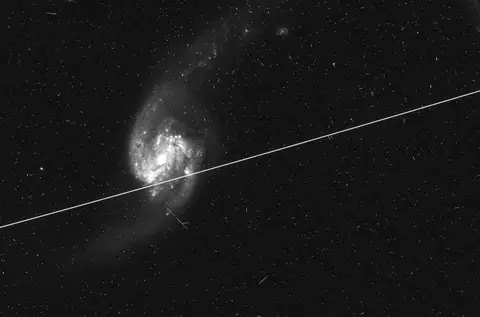
أخبار علمية · التوابع الصنعيّة تفسد المزيد والمزيد من صور هابل!! -
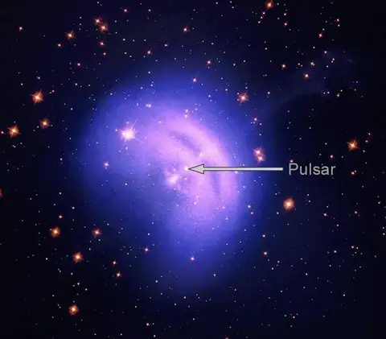
أخبار علمية · سديم الرّياح النّجميّ (Vela Pulsar) يحلّق في صورةٍ جديدةٍ من مسبار (IXPE) التّابع لناسا -
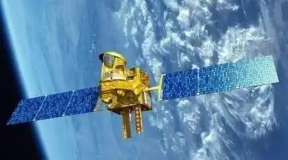
أخبار علمية · أسقطت منظّمة أبحاث الفضاء الهنديّة (ISRO) التّابع الصّنعيّ (Megha-Tropiques-1) للأرصاد الجوّيّة
شباط 2023
-
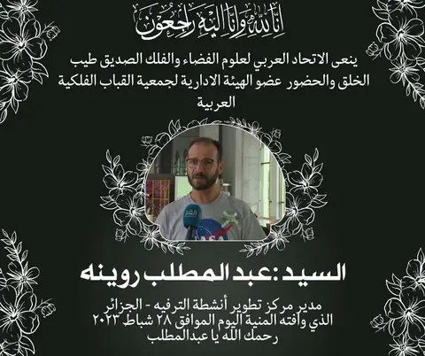
أخبار الاتحاد · الاتحاد ينعى السيد عبد المطلب روينة -
 محاضرات وفعاليات · ورشة بعنوان “المعلم الفلكي”
محاضرات وفعاليات · ورشة بعنوان “المعلم الفلكي”
-
 محاضرات وفعاليات · دعوة لحضور المحاضرة الموسومة بعنوان: كيف عمل الكون والنجوم على تشكيل العناصر؟
محاضرات وفعاليات · دعوة لحضور المحاضرة الموسومة بعنوان: كيف عمل الكون والنجوم على تشكيل العناصر؟
-
 محاضرات وفعاليات · دعوة لحضور الندوة الموسومة آثار العجيري في علم الفلك العربي
محاضرات وفعاليات · دعوة لحضور الندوة الموسومة آثار العجيري في علم الفلك العربي
-
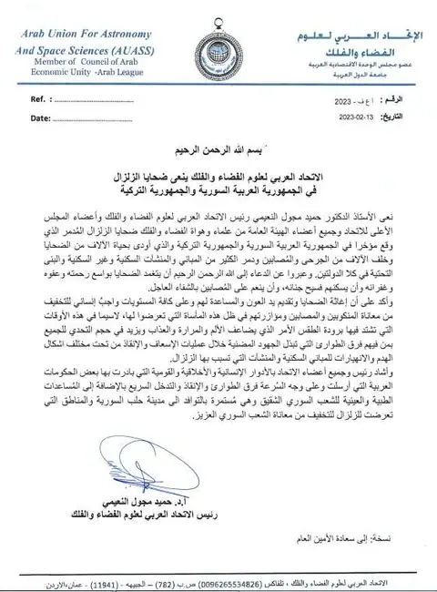
أخبار علمية · نعي ضحايا الزلزال -
 محاضرات وفعاليات · دعوة لحضور محاضرة بعنوان: ظاهرة الزلازل وتطوراتها في منطقتنا
محاضرات وفعاليات · دعوة لحضور محاضرة بعنوان: ظاهرة الزلازل وتطوراتها في منطقتنا
-
 محاضرات وفعاليات · إعلان دورة جديدة
محاضرات وفعاليات · إعلان دورة جديدة
-
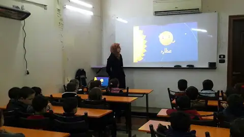
أخبار الاتحاد · نشاطات الجمعية الفلكية السورية بالتعاون مع الاتحاد العربي لعلوم الفضاء والفلك خلال عام 2022 -
 محاضرات وفعاليات · دعوة لحضور محاضرة بعنوان كيف عمل الكون والنجوم على تشكيل العناصر
محاضرات وفعاليات · دعوة لحضور محاضرة بعنوان كيف عمل الكون والنجوم على تشكيل العناصر
كانون الثاني 2023
-
 محاضرات وفعاليات · دورة الفلكي الصغير
محاضرات وفعاليات · دورة الفلكي الصغير
-
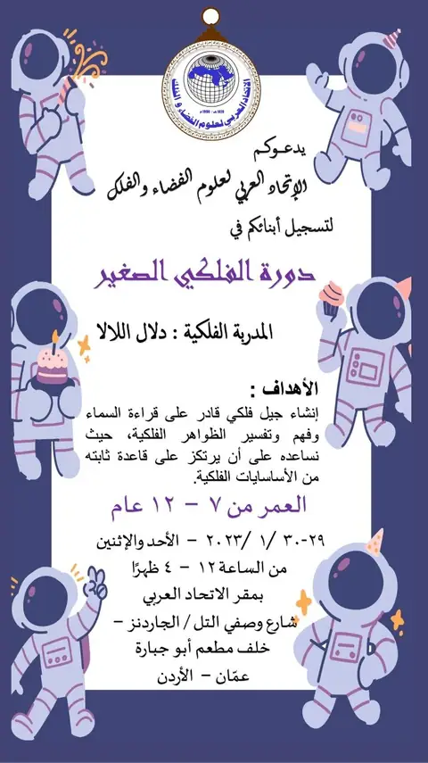
أخبار علمية · إعلان دورة الفلكي الصغير -
 محاضرات وفعاليات · دعوة لحضور محاضرة تحت عنوان: علوم الفضاء والفلك وتأثيرها على الأمن القومي
محاضرات وفعاليات · دعوة لحضور محاضرة تحت عنوان: علوم الفضاء والفلك وتأثيرها على الأمن القومي
-
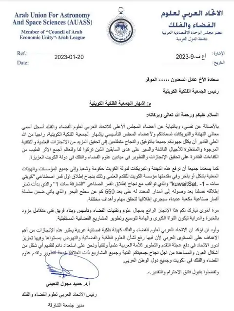
أخبار علمية · الاتحاد يهنئ بإشهار الجمعية الفلكية الكويتية - أخبار علمية · تحت شعار #الإنسان والفضاء… #معرض الرياض_للفضاء ينطلق الأحد المقبل في واحة الملك سلمان للعلوم.
- محاضرات وفعاليات · محاضرة التغير المناخي وأثره على التنوع البيولوجي ومستقبل الغذاء – التسجيل الكامل
-
 محاضرات وفعاليات · دعوة لحضور محاضرة بعنوان: أثر التغيرات المُناخية على التنوع البيولوجي ومستقبل الغذاء العالمي
محاضرات وفعاليات · دعوة لحضور محاضرة بعنوان: أثر التغيرات المُناخية على التنوع البيولوجي ومستقبل الغذاء العالمي
- أخبار الاتحاد · العدد السادس من مجلة الكون إصدار عام ٢٠٢٣
لا توجد منشورات من هذا النوع في هذه السنة.